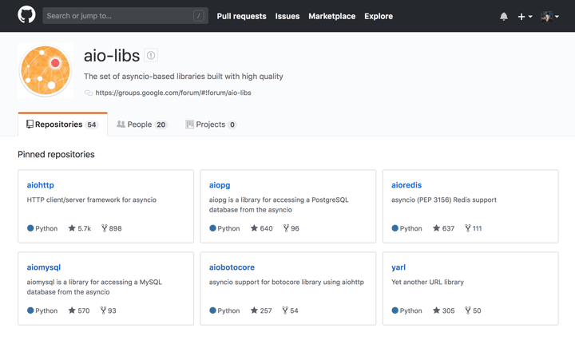

纸上得来终觉浅，绝知此事要躬行。
1. 引言
官网对
asyncio的描述不同于其他标准库模块，只主要罗列了如下四个关键词，即表达这个模块融合了这些技术或包含了这些功能。
- 第一个就是**异步
I/O**，当代码需要执行一个耗时的操作的时候，它只发出I/O的执行，并不等待I/O的结果，然后就执行其他的代码，这样可以提高效率。 - 第二个就是事件循环，把基本的
I/O操作(如读和写)转化为需要处理的事件，通过事件循环进行事件的监测和事件触发处理工作。 - 第三个就是协程，我们知道线程是由操作系统切换的，而是用协程可以收回控制权，并且可以将异步编程同步化。注册到事件循环中的事件处理器，就是协程对象，它由事件循环来调用。当程序阻塞等待读或者写操作的时候，做上下文的切换就可以让效率最大化。
- 第四个就是任务，也就是
asyncio模块可以非常容易的并发任务，并且可以实现创建取消的管理功能。
之前我们提到的Twisted、Tornado和Gevent，但是它们的代码之间既不兼容也不能移植，所以Python之父吉多·范罗苏姆在Python3中想实现一个原生的基于生成器的协程库，其中内置了对于异步I/O的支持，这就是asyncio了(集大成者)。
asyncio的API在Python3.6开始稳定下来了，这就意味着从Python3.6开始asyncio就可以用于线上的生产环境了。而在Python3.5之间，只能使用生成器来实现协程了。
2. 生态问题
Asynchronous I/O, event loop, coroutines and tasks.
虽然asyncio是官方的解决方案，也是吉多主推的解决方案，但整个asyncio生态还并没有建立起来，现在只能当玩具在使用。asyncio是非常革命性意义的，但让人们都去使用其进行开发，还是有一段距离和过程的。这个过程我认为还是比较长的，主要有以下几个原因。
- [1] 迁移成本太高
优先是Python2到Python3的迁移，并不是安装一个库或简单的升级Python版本就可以解决的，这是一个不兼容的升级。而且，现在绝大部分公司在Python2下的代码都运行的比较良好，向上升级并没有太大的收益可言。
所以就现阶段而言，很难说服领导来主推这件事情，这也让很多开发者并没有实际的项目去接触这个新生事物。
- [2] 使用后的效果不突出
虽然从16开始就有人开始写asyncio的代码，而且程序的执行效率确实比之前的块。但整个快并不是一个指数级别的量级，而只是一个效率的提升。
当效率没有成本提高的时候，就很难综合的决定为了那百分之几十的效率提升，而做出如此大的改变的。毕竟，现有的代码并没有出现严重的瓶颈问题。如果有，也是可以通过简单的堆加机器的方式进行解决的。
- [3] 改变了编程习惯
asyncio的作者们已经很努力的让开发者感知到对应的变化了，但是它用起来还是需要一整套的开发习惯的支持。简单地说，你并不是只用aiohttp模块，你的请求就都是异步非阻塞的。
请求到回应过程中，如果某个地方没有注意，给阻塞了。这会让代码的执行效果，大打折扣。而且，如果你对于公司的业务逻辑、Python语言以及相关的库不熟悉，很多时候这样的问题是很难杜绝和避免的。
- [4] 没有大公司出来背书
到现在为止，基本上没有那个公司或那个重要的项目，说是支持asyncio版本的驱动并且能够做到及时的维护。
我们举个例子，进行说明一下。aioredis接口和py-redis的接口不一致，一些开源项目的更新和迭代需要对应驱动也能做到与时俱进。不然的话，开发者就很尴尬了。
如果大家有了解过aio的生态，Github上有一个叫aio-libs这样一个组织，这个组织下面有很多异步I/O的驱动。不过这个组织是一个民间组织，大多数开发者都是俄罗斯人，并没有Python项目的核心开发者参与其中，所以质量上不一定放心。

现在我们在Github上看到的，大部分asyncio的项目都不是官方的。而且，大部分Python项目的核心开发者在自己的公司也都没有主推这件事情。只有少数的核心开发做了asyncio的支持，如MongoDB对应的异步I/O驱动。
使用asyncio和其他的模块不一样，这个模块需要在生态里面才能发挥作用。如用requests+asyncio这种方式写爬虫，这是错误的，asyncio完全不会发挥它的作用。需要使用aio体系中的aiohttp，才可以正常运行。而如果需要把对应的数据存储到MySQL中，不能使用pymysql的模块，而只能使用aio体系中的对应驱动aiomysql。
只有在整个生态中，需要的库都是aio体系的，并且代码写对了才可以。所以，我们日常中使用asyncio编程，如果发现并不快，有可能并不是asyncio的问题，而是我们编写的代码有同步阻塞的逻辑。
3. 使用方式
工欲善其事，必先利其器
[1] 简单使用
- 首先，我们看一个最简单的示例。
asyncio的事件循环有多种方式去启动协程，最简单的方式就是使用这个run_until_complete这个方法。 - 使用
async def会创建一个协程，协程可以有返回值。而使用get_event_loop会创建一个事件循环，通过调用这个事件循环中的run_until_complete方法就可以启动协程了。而close方法，会关闭这个事件循环。
import asyncio
async def coroutine():
print('in coroutine')
return 'result'
event_loop = asyncio.get_event_loop()
try:
print('starting coroutine')
coro = coroutine()
print('entering event loop')
result = event_loop.run_until_complete(coro)
print(f'it returned: {result}')
finally:
print('closing event loop')
event_loop.close()
$ python asyncio.py
starting coroutine
entering event loop
in coroutine
it returned: result
closing event loop
[2] async和await
- 此外，协程可以启动另外协程并等待结果，这样可以让各个协程专注于自己的工作，这也是实际工作中需要用到的模式。
- 该示例中包含了三个协程，在主协程中调用了另外两个协程。这是一个链式的，代码实现起来就相当于是一个顺序执行。这里需要注意一点就是，
chain2执行的前提就是获得chain1的执行结果。通过下面的执行结果，可以看到协程之间是如何切换的。 - 其中使用了
async和await关键字，这是Python3.5新添加的关键字，分别用来替换旧式写法。
import asyncio
async def main():
print('waiting for chain1')
result1 = await chain1()
print('waiting for chain2')
result2 = await chain2(result1)
return (result1, result2)
async def chain1():
print('in chain1')
return 'result1'
async def chain2(arg):
print('in chain2')
return 'Derived from {}'.format(arg)
event_loop = asyncio.get_event_loop()
try:
return_value = event_loop.run_until_complete(main())
print(f'return value: {return_value}')
finally:
event_loop.close()
$ python asyncio.py
waiting for chain1
in chain1
waiting for chain2
in chain2
return value: ('result1', 'Derived from result1')
- 旧式写法如下所示，我们可以看到
async关键字就是为了替换asyncio.coroutine装饰器，await关键字就是为了替换yield from。从Python3.5开始，Python将使用async和await关键字，自此协程成了新的语法，而在是一种生成器类型了。
import asyncio
@asyncio.coroutine
def main():
print('waiting for chain1')
result1 = yield from chain1()
print('waiting for chain2')
result2 = yield from chain2(result1)
return (result1, result2)
@asyncio.coroutine
def chain1():
print('in chain1')
return 'result1'
@asyncio.coroutine
def chain2(arg):
print('in chain2')
return 'Derived from {}'.format(arg)
event_loop = asyncio.get_event_loop()
try:
return_value = event_loop.run_until_complete(main())
print(f'return value: {return_value}')
finally:
event_loop.close()
$ python asyncio.py
waiting for chain1
in chain1
waiting for chain2
in chain2
return value: ('result1', 'Derived from result1')
[3] async with
- 之前，我们使用
with进行上下文管理，其实也有异步with的用法，那就是async with语法。示例中需要提前安装一个aiohttp扩展库，相当于异步的requests功能。
# pip install aiohttp
import asyncio
import aiohttp
async def fetch_page(url):
async with aiohttp.ClientSession() as session:
async with session.get(url) as response:
return await response.json()
loop = asyncio.get_event_loop()
result = loop.run_until_complete(fetch_page('http://httpbin.org/get?a=2'))
print(f"Args: {result.get('args')}")
loop.close()
$ python asyncio.py
Args: {'a': '2'}
[4] async for
- 我们可以看到
async for就是一个异步的迭代器。在Python3.5之前，写一个异步迭代器其实是一个很麻烦的事情。首先需要实现一个类，定义双下划线__iter__和__next__方法，之后才能使用。 - 在
Python3.5之后，写起来就只需要使用async for语法很简单的就实现了，而且还支持列表解析等方法。
import asyncio
async def g1():
yield 1
yield 2
async def g2():
async for v in g1():
print(v)
return [v * 2 async for v in g1()]
loop = asyncio.get_event_loop()
try:
result = loop.run_until_complete(g2())
print(f'Result is {result}')
finally:
loop.close()
$ python asyncio.py
1
2
Result is [2, 4]
[5] Future和Task
- 异步的
Future和concurrent.futures的Future作用是相同的，它们的实例都可以代表一个已经完成或未完成的推迟的任务。它们的使用借口也非常的类似，只是实现的方式有所不同，不可以互换。 - 它和协程都可以用
await关键字，从而将其传递给事件循环，暂停协程的执行来等待某些事件的发生。当Future完成自己的任务之后，事件循环会察觉到，暂停并等待。在那里协程可以通过set方法获取Future对象的返回值，并开始继续执行。 - 而
Task对象是Future的子类，它将协程和Future联系起来，将一个协程封装一个Future的对象。 - 示例中，
asyncio.sleep是异步I/O中的sleep方法，其实它也是一个协程。异步I/O中是不能使用time.sleep的，因为其会阻塞整个线程。其中ensure_future可以将一个协程封装成一个Task，而gather可以将一些Future和协程封装成一个Future。而loop的run_until_complete方法，既可以接收一个Future对象，又可以接收一个协程对象。 - 通过输出信息可以看到，虽然
func1这个协程是先启动的，但是由于它sleep了，所以它会在之后才结束。
import asyncio
async def func1():
await asyncio.sleep(1)
await func(1)
async def func2():
await func(2)
async def func(num):
print(num * 2)
loop = asyncio.get_event_loop()
tasks = asyncio.gather(
asyncio.ensure_future(func1()),
asyncio.ensure_future(func2())
)
loop.run_until_complete(tasks)
tasks = [
asyncio.ensure_future(func1()),
asyncio.ensure_future(func2())
]
loop.run_until_complete(asyncio.wait(tasks))
loop.close()
$ python asyncio.py
4
2
4
2
4. 同步机制
为了支持安全的并发，
asyncio模块也包含了在多进程和多线程模块里面，相同的低级原语的实现。
[1] 信号量 - Semaphore
- 假如我们需要抓起很多页面，使用
httpbin网址加参数的网址替换。一次性产生几千个请求是可以实现的，但是很容易被对方的网站给封掉。那么，可以使用信号量对并发的数量进行控制，运行的时候可以感受到信号量对于并发的限制，基本处于同时处理3个请求的标准上。
import aiohttp
import asyncio
NUMBERS = range(6)
URL = 'http://httpbin.org/get?a={}'
sema = asyncio.Semaphore(3)
async def fetch_async(a):
async with aiohttp.request('GET', URL.format(a)) as r:
data = await r.json()
return data['args']['a']
async def print_result(a):
with (await sema):
r = await fetch_async(a)
print('fetch({}) = {}'.format(a, r))
loop = asyncio.get_event_loop()
f = asyncio.wait([print_result(num) for num in NUMBERS])
loop.run_until_complete(f)
$ python asyncio.py
fetch(4) = 4
fetch(3) = 3
fetch(1) = 1
fetch(2) = 2
fetch(0) = 0
fetch(5) = 5
[2] 锁 - Lock
- 我们知道锁就是信号量为一的特例。该示例中使用了
call_later方法，它表达推迟一段时间的回调。第一个参数表示以秒为单位的延迟，第二个参数就是回调的函数。 - 通过输出信息，我们可以看到最开始两个协程都在等待这个锁。当我们使用
call_later延迟解锁之后，它们可以顺序的获得锁和释放锁了。
import asyncio
import functools
def unlock(lock):
print('callback releasing lock')
lock.release()
async def test(locker, lock):
print('{} waiting for the lock'.format(locker))
with await lock:
print('{} acquired lock'.format(locker))
print('{} released lock'.format(locker))
async def main(loop):
lock = asyncio.Lock()
await lock.acquire()
loop.call_later(0.1, functools.partial(unlock, lock))
await asyncio.wait([test('l1', lock), test('l2', lock)])
loop = asyncio.get_event_loop()
loop.run_until_complete(main(loop))
loop.close()
$ python asyncio.py
l2 waiting for the lock
l1 waiting for the lock
callback releasing lock
l2 acquired lock
l2 released lock
l1 acquired lock
l1 released lock
[3] 条件 - Condition
- 实例代码，就是之前博客中关于生产者和消费者模型改写的。这次演示了两种通知方法，第一个是
notify，那是挨个通知消单个费者；第二种是notify_all，也就是一次性通知所有消费者。 - 其中，由于
producer和producer2是两个协程，不能使用之前的call_later方法。需要使用create_task，将它们创建成一个任务，也就是Task。注意，记着使用完成之后取消掉。
import asyncio
import functools
async def consumer(cond, name, second):
await asyncio.sleep(second)
with await cond:
await cond.wait()
print('{}: Resource is available to consumer'.format(name))
async def producer(cond):
await asyncio.sleep(2)
for n in range(1, 3):
with await cond:
print('notifying consumer {}'.format(n))
cond.notify(n=n)
await asyncio.sleep(0.1)
async def producer2(cond):
await asyncio.sleep(2)
with await cond:
print('Making resource available')
cond.notify_all()
async def main(loop):
condition = asyncio.Condition()
task = loop.create_task(producer(condition))
consumers = [consumer(condition, name, index)
for index, name in enumerate(('c1', 'c2'))]
await asyncio.wait(consumers)
task.cancel()
task = loop.create_task(producer2(condition))
consumers = [consumer(condition, name, index)
for index, name in enumerate(('c1', 'c2'))]
await asyncio.wait(consumers)
task.cancel()
loop = asyncio.get_event_loop()
loop.run_until_complete(main(loop))
loop.close()
$ python asyncio.py
notifying consumer 1
c1: Resource is available to consumer
notifying consumer 2
c2: Resource is available to consumer
Making resource available
c1: Resource is available to consumer
c2: Resource is available to consumer
[4] 事件 - Event
- 示例代码是模仿锁的例子实现的一个事件，看起来也是和锁的例子很像，但是不同的是，事件被触发的时候，两个消费者不用获取锁就要尽快的执行下去了。
import asyncio
import functools
def set_event(event):
print('setting event in callback')
event.set()
async def test(name, event):
print('{} waiting for event'.format(name))
await event.wait()
print('{} triggered'.format(name))
async def main(loop):
event = asyncio.Event()
print('event start state: {}'.format(event.is_set()))
loop.call_later(
0.1, functools.partial(set_event, event)
)
await asyncio.wait([test('e1', event), test('e2', event)])
print('event end state: {}'.format(event.is_set()))
loop = asyncio.get_event_loop()
loop.run_until_complete(main(loop))
loop.close()
$ python asyncio.py
event start state: False
e2 waiting for event
e1 waiting for event
setting event in callback
e2 triggered
e1 triggered
event end state: True
[5] 队列 - Queue
- 在
asyncio的官网上已经有两个很好的示例，可以自行阅读。我们这里对其进行了改写，使其更贴近于工作，体验一下使用aiohttp加优先级队列的用法。
import asyncio
import random
import aiohttp
NUMBERS = random.sample(range(100), 7)
URL = 'http://httpbin.org/get?a={}'
sema = asyncio.Semaphore(3)
async def fetch_async(a):
async with aiohttp.request('GET', URL.format(a)) as r:
data = await r.json()
return data['args']['a']
async def collect_result(a):
with (await sema):
return await fetch_async(a)
async def produce(queue):
for num in NUMBERS:
print('producing {}'.format(num))
item = (num, num)
await queue.put(item)
async def consume(queue):
while 1:
item = await queue.get()
num = item[0]
rs = await collect_result(num)
print('consuming {}...'.format(rs))
queue.task_done()
async def run():
queue = asyncio.PriorityQueue()
consumer = asyncio.ensure_future(consume(queue))
await produce(queue)
await queue.join()
consumer.cancel()
loop = asyncio.get_event_loop()
loop.run_until_complete(run())
loop.close()
$ python asyncio.py
producing 37
producing 47
producing 26
producing 49
producing 76
producing 45
producing 8
consuming 8...
consuming 26...
consuming 37...
consuming 45...
consuming 47...
consuming 49...
consuming 76...
5. 总结
到这里，我们就大概学习了asyncio模块。可以感受得到，asyncio的用法也是一种套路。在需要的位置上用await，在函数定义的时候使用async def就可以了。